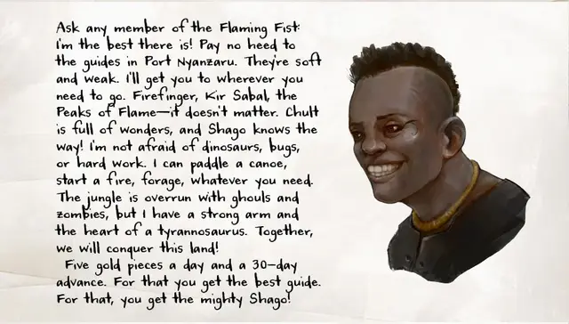

Шаго
Shago
Средний Гуманоид (Человек чультец), хаотично-добрый, именной НИП

Класс Доспеха 16 (клепанный кожаный доспех, щит)
Хиты 112 (15к8 + 45)
Скорость 30 футов
| мод | спас | ||
|---|---|---|---|
| СИЛ | 18 | +4 | +7 |
| ЛОВ | 15 | +2 | +5 |
| ТЕЛ | 16 | +3 | +6 |
| мод | спас | ||
|---|---|---|---|
| ИНТ | 10 | +0 | +0 |
| МДР | 12 | +1 | +1 |
| ХАР | 15 | +2 | +2 |
Навыки Атлетика +10, Выживание +7, Запугивание +5
Чувства пассивное Восприятие 11
Опасность 5 (1800 опыта)
Бонус мастерства +3
Особенности
Языки. Шаго знает один любой язык (обычно Общий).
Храбрый. Шаго совершает с преимуществом спасброски от испуга.
Жестокость. Рукопашное оружие причиняет одну дополнительную кость своего урона, когда Шаго попадает им (уже включено в атаку).
Действия
Мультиатака. Шаго совершает три рукопашные атаки или две дальнобойные атаки.
Копье. Рукопашная или дальнобойная атака оружием: +7 к попаданию, досягаемость 5 футов или дистанция 20/60 футов, одна цель. Попадание: Колющий урон 11 (2к6 + 4), или колющий урон 13 (2к8 + 4), если используется двумя руками для совершения рукопашной атаки.
Удар щитом. Рукопашная атака оружием: +7 к попаданию, досягаемость 5 футов, одно существо. Попадание: Дробящий урон 9 (2к4 + 4). Если цель — существо с размером не больше Среднего, она должна преуспеть в спасброске Силы Сл 15, иначе будет сбита с ног.
Реакции
Парирование. Шаго добавляет 3 к КД против одной рукопашной атаки, которая должна попасть по нему. Для этого Шаго должен видеть атакующего, и должен использовать рукопашное оружие.
Описание
Шаго – Чульт и единственный сын Джонси, одного из торговых принцев Порта Нянзару. Он работает в форте Белуриан и, пусть он и представляет себя как независимого наблюдателя, он в тайном сговоре с Пылающим Кулаком. Шаго был во главе многих экспедиций Пылающего Кулака в джунгли для убийства нежити, даже несмотря на большой страх превратиться в зомби или упыря.
Несмотря на свои страхи, Шаго знает, что нежить должна быть уничтожена, поэтому он работает на Пылающих Кулаков. Торговые принцы признают угрозу нежити, но они не предпримут никаких шагов по её устранению помимо найма стражи для защиты Порта Нянзару. Его мать верит, что она «наняла» его чтобы он следил за Пылающими Кулаками, но он дружит с наёмниками и редко предоставляет ей какую-либо секретную или полезную информацию о них.
Шаго достигает 6 футов и 3 дюймов в высоту и весит 220 фунтов, с мощными мускулами и дружелюбной улыбкой. Его главная цель – впечатлить Лиару Портир настолько, чтобы она присвоила ему звание в Пылающих Кулаках. Пока Шаго является проводником группы, персонажи получают преимущество на броски Харизмы в переговорах с Пылающими Кулаками.